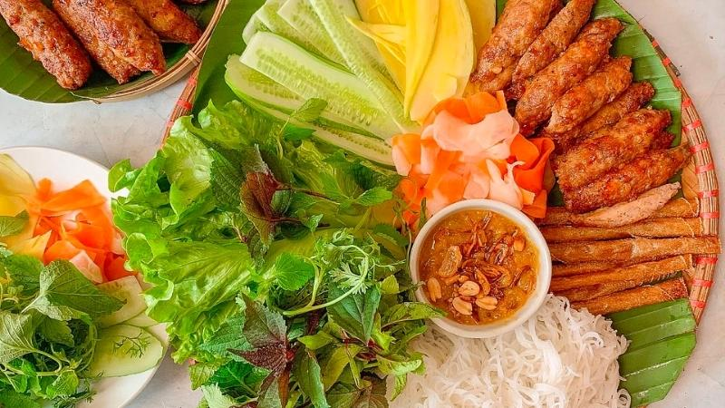
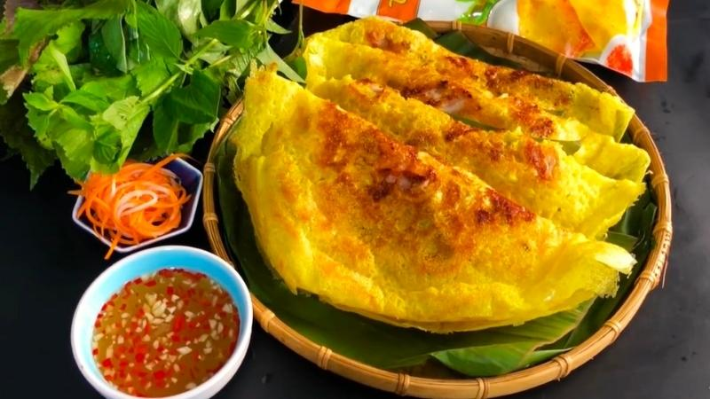
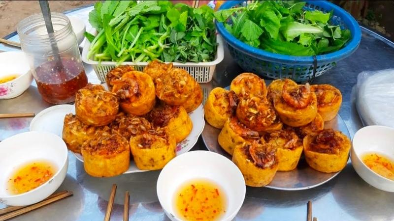
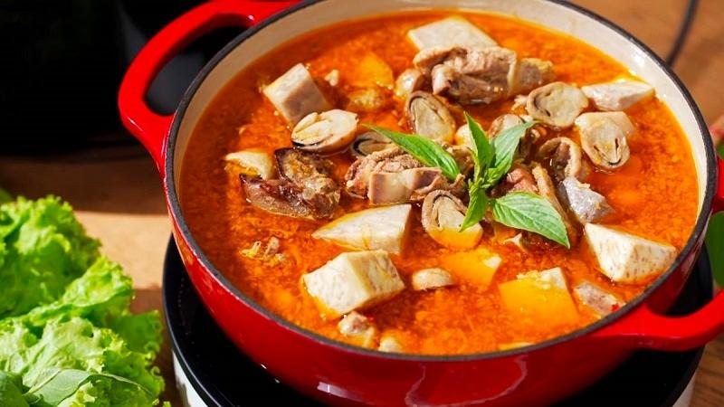
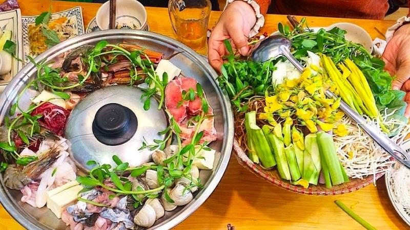
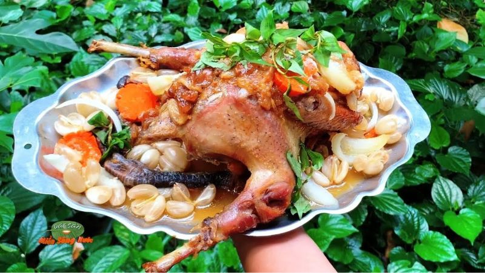
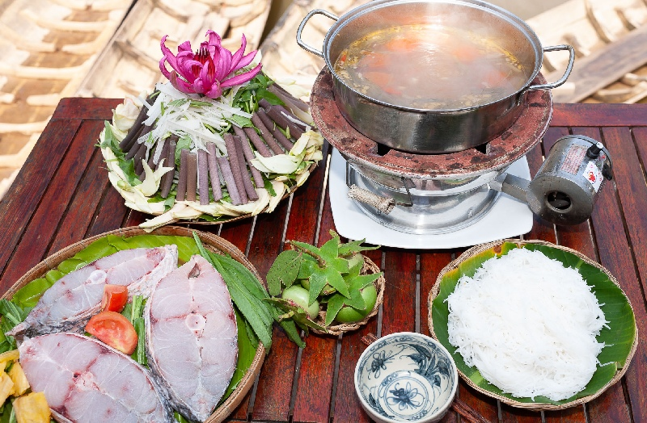
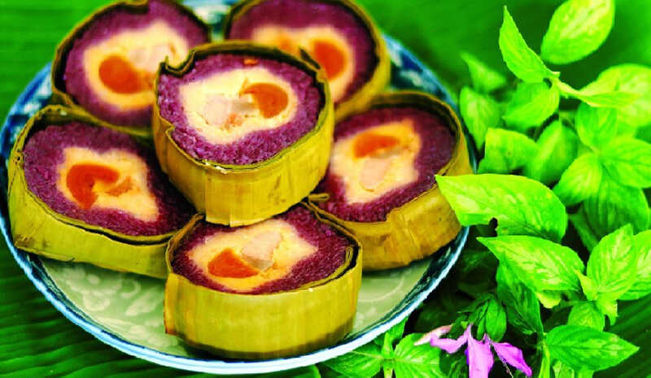

Nem nướng
Nem nướng là món ăn nổi tiếng được làm từ thịt heo xay nhuyễn, tẩm ướp gia vị rồi nướng trên bếp than hồng.
Một số món đặc sản du khách nên thử khi đến thăm Cần Thơ

Nem nướng là món ăn nổi tiếng được làm từ thịt heo xay nhuyễn, tẩm ướp gia vị rồi nướng trên bếp than hồng.

Bánh xèo miền Tây có lớp vỏ vàng giòn, bên trong là nhân tôm, thịt, giá đỗ và hành lá.

Bánh cống là món đặc sản nổi tiếng với lớp vỏ giòn rụm, nhân tôm, thịt và đậu xanh béo bùi.

Vịt nấu chao là món ăn đậm đà với thịt vịt mềm ngọt được ướp cùng chao và gia vị đặc trưng.

Lẩu mắm mang hương vị đặc trưng của miền Tây với nước dùng được nấu từ mắm cá, kết hợp nhiều loại hải sản, thịt và rau đồng.

Gà um dâu là món ăn độc đáo kết hợp giữa thịt gà ta săn chắc và trái dâu Hạ Châu chín vừa.

Lẩu bần nổi bật với vị chua thanh từ trái bần chín kết hợp cùng cá, tôm và các loại rau đặc trưng miền Tây.

Bánh tét lá cẩm là đặc sản nổi tiếng của Cần Thơ với lớp nếp dẻo màu tím tự nhiên từ lá cẩm.